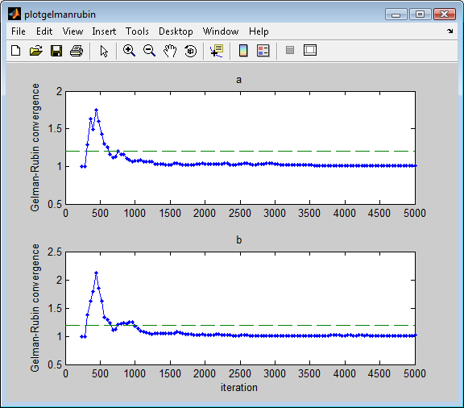
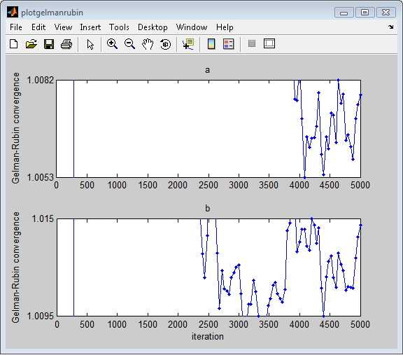

sodaPlotGelmanRubin(conf,critGelRub) sodaPlotGelmanRubin(conf,critGelRub,'view','zoom')
For each parameter, this function plots how the Gelman-Rubin convergence criterion decreases with each generation.
sodaPlotGelmanRubin(conf,critGelRub,'view','full')
Including the view option lets you set the limits on the y-axis. If you select 'full', no limits are set and all data points will be visible. If you select 'zoom', the y-axis automatically zooms to the range spanned by the last conf.nGelRub generations in the critGelRub array. Default behavior is 'zoom'.

Note that the green dashed line corresponds with the value of conf.critGelRubConvd.
sodaPlotGelmanRubin(conf,critGelRub,'view','zoom')
This is the same plot as above, but with the view option set to 'full':
